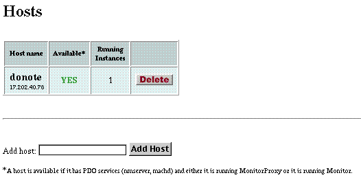

PATH
WebObjects 4.0 Documentation >
Serving WebObjects
 Table of Contents
Table of Contents  Previous Section
Previous Section
Adding a Host to Monitor
Before you run MonitorProxy on a remote machine, you should let the Monitor application know about it. To do this, complete the following steps:
- Click the Hosts button in the Monitor banner. The following page is displayed:

- Enter the name of a host in the "Add host" field. It must be a valid host name assigned to an IP address (that is, it must have a DNS entry).
- Click Add Host.
Table of Contents  Next Section
Next Section